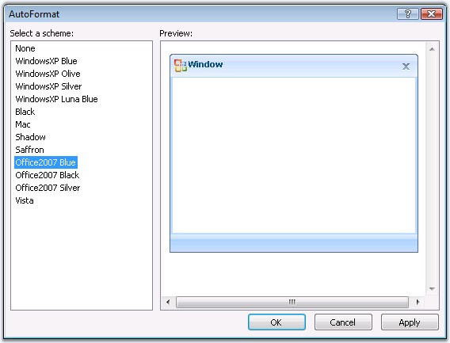
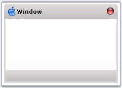
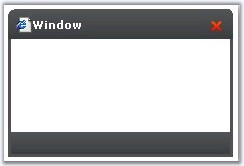
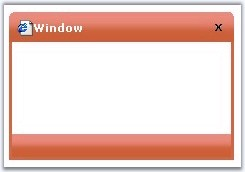
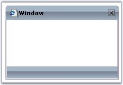
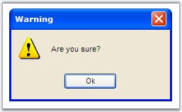

This section discusses the style and appearance settings that easily allows to customize and enhance the look and feel of the control, in the following topic.
The Window control provides pre-defined set of styles that can be applied to it just by the click of a button.
Right clicking the control and selecting the Auto Format... option opens the following Auto Format dialog box.

Figure 433:Auto Format option of Window Control
Window control supports the following AutoFormats.
· None (which is the default AutoFormat)
· WindowsXP Blue
· WindowsXP Olive
· WindowsXP Silver
· WindowsXP LunaBlue
The new built-in format skins added for Windows are as follows.
· MAC

Figure 434
· Black

Figure 435
· Saffron

Figure 436
· Shadow

Figure 437
The left pane lists the various pre-defined style scheme that are available. The right pane shows the preview of the currently selected scheme. Select the required style, and then click OK to apply the selected scheme to the control.
Example of a selected AutoFormat
The following image shows the Window control with WindowsXP Blue style setting.

Figure 438